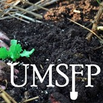
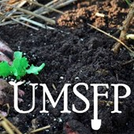

Here are a variety of organizations you can join:
University of Michigan Sustainable Food Program. UMSFP plans, sponsors, and publicizes events that strengthen the sustainable food system both on campus and within the wider Washtenaw County community. These events serve as leadership opportunities for the students planning them, platforms for the students and community members featured at them, and collaborative spaces that encourage greater interconnectedness among local food focused groups. The events are purposefully diverse in programming and location to capture a diverse audience. Some event formats include festivals, conferences, workshops, speaker series, and potlucks.
Days for Girls. Days for Girls is a nonprofit organization that strives to provide access to sustainable hygiene and health education through the creation of reusable feminine hygiene products.
Friends of the Campus Farm. The members of the Friends of the Campus Farm established this group to empower students to create a healthy future through sustainable food education, training, and outreach. FCF is established for the purpose of creating an on campus farm and providing constructive student input at the University of Michigan, which will provide students with opportunities to develop knowledge and skills related to farming and agriculture, food preparation and preservation, personal and environmental health, community outreach, and business and economic development.
Check out these other organizations
 
